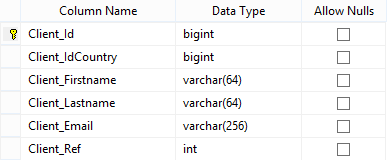
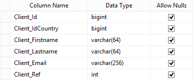
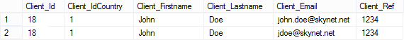

Duration: ~5mins
Databases contain some of the most sensitive data, customer records, financial data, product records and more.
Audit records of data are vital to have in order to understand who accessed or changed what data when.
Set up the Data Logging is really simple. Remember the Client table from previous Labs.
Imagine we want to log record modifications on this table (update and delete operations).
Create a new table named Client_LOGS without constraint.
And that's all!
Code sample (as you can see there is nothing special).
var client = new Client { IdCountry = country.Id, Firstname = "John", Lastname = "Doe", Email = "john.doe@skynet.net", Ref = 1234 }; using (var service = new ServiceProxy<IClientService>()) { service.Proxy.Save(_userContext, ref client); // Creation client.Email = "jdoe@skynet.net"; service.Proxy.Save(_userContext, ref client); // Update service.Proxy.Delete(_userContext, client); // Delete }
Client_LOGS records
Data logging tables can be created, deleted and truncated at any time.
It is possible to combine data logging with data ownership. This feature will be explained in a next lab.